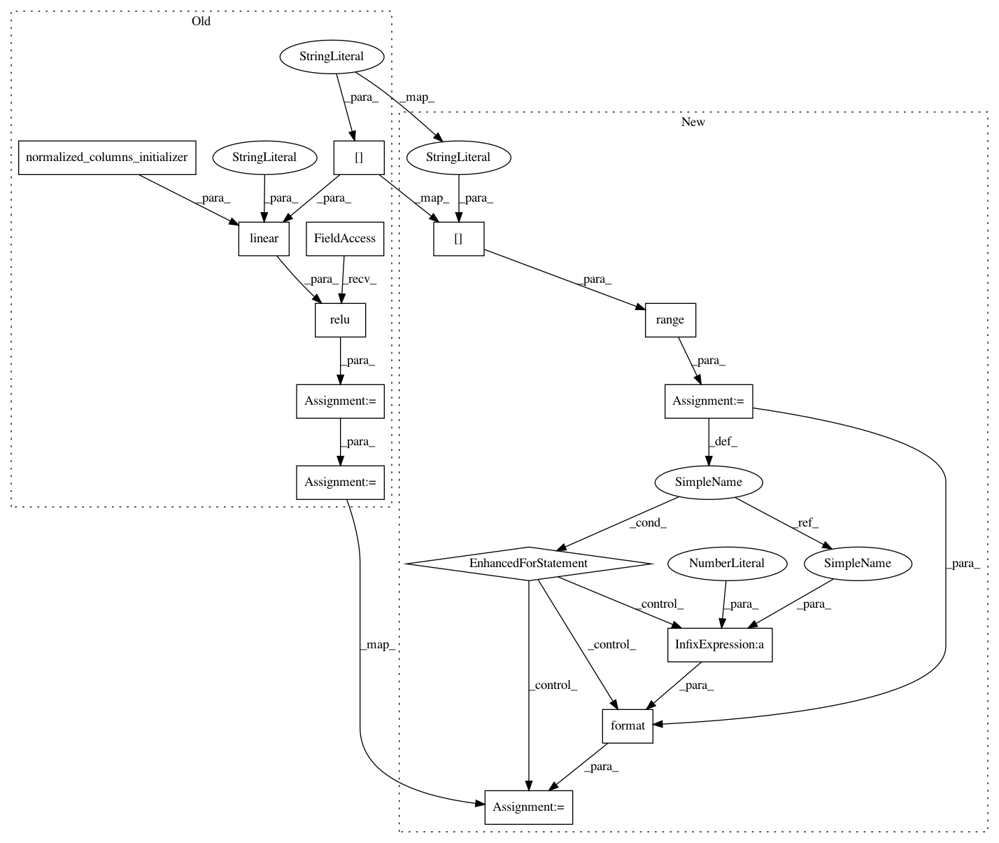

55bab51a583edf62328c654f72321d3f0caf62a2,yarll/agents/sac.py,SAC,build_actor_network,#SAC#,87
Before Change
w_bound = 3e-3
x = self.states
with tf.variable_scope("actor"):
x = tf.nn.relu(linear(x, self.config["n_hidden_units"], "L1", normalized_columns_initializer()))
x = tf.nn.relu(linear(x, self.config["n_hidden_units"], "L2", normalized_columns_initializer()))
mean = linear(x,
self.n_actions,
"mean",
After Change
w_bound = 3e-3
x = self.states
with tf.variable_scope("actor"):
for i in range(self.config["n_hidden_layers"]):
x = tf.nn.relu(linear(x, self.config["n_hidden_units"], "L{}".format(i + 1), normalized_columns_initializer()))
mean = linear(x,
self.n_actions,
"mean",
tf.random_uniform_initializer(-w_bound, w_bound),
In pattern: SUPERPATTERN
Frequency: 3
Non-data size: 14
Instances
Project Name: arnomoonens/yarll
Commit Name: 55bab51a583edf62328c654f72321d3f0caf62a2
Time: 2018-11-14
Author: arno.moonens@gmail.com
File Name: yarll/agents/sac.py
Class Name: SAC
Method Name: build_actor_network
Project Name: arnomoonens/yarll
Commit Name: 55bab51a583edf62328c654f72321d3f0caf62a2
Time: 2018-11-14
Author: arno.moonens@gmail.com
File Name: yarll/agents/sac.py
Class Name: SAC
Method Name: build_softq_network
Project Name: arnomoonens/yarll
Commit Name: 55bab51a583edf62328c654f72321d3f0caf62a2
Time: 2018-11-14
Author: arno.moonens@gmail.com
File Name: yarll/agents/sac.py
Class Name: SAC
Method Name: build_value_network